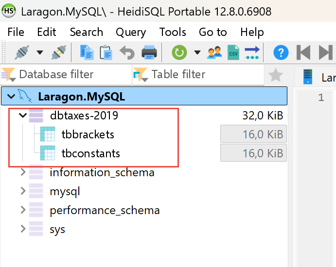
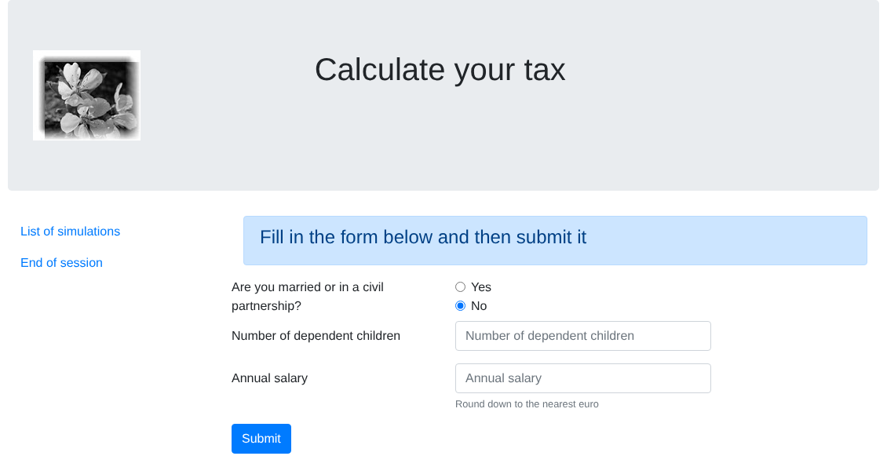
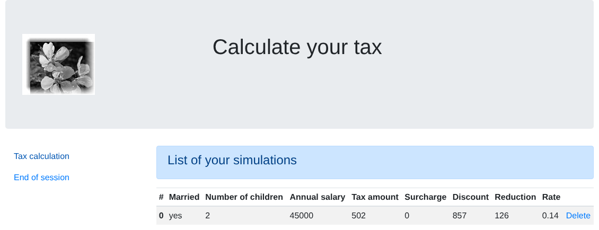
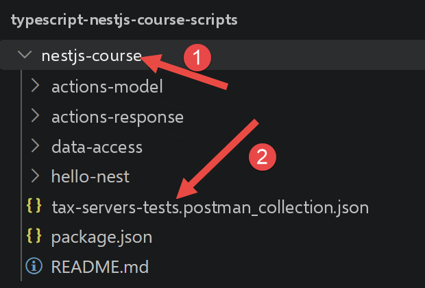
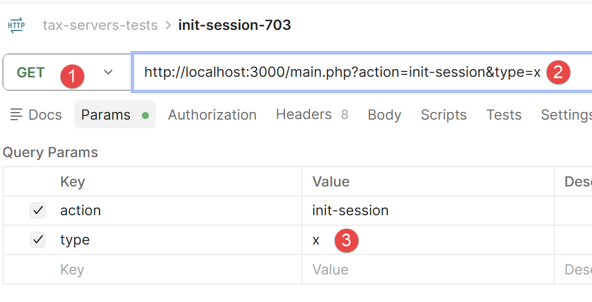
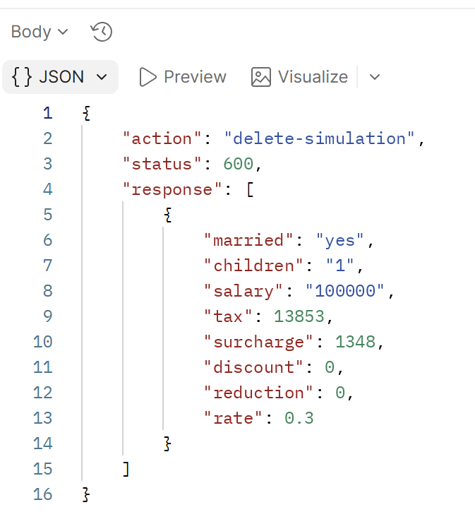

4. Instalación de un servidor NestJS
Nota: a continuación, a veces se hace referencia a un servidor PHP, el mencionado en el curso [Introduction to the PHP7 Language Through Examples]. El servidor NestJS implementa los mismos servicios que este servidor PHP.
Trataremos las funciones HTTP de TypeScript, es decir, las funciones que permiten consultar un servidor web. Para nuestras pruebas necesitamos un servidor web. Usaremos el desarrollado en la sección “Caso de estudio” : el servidor de cálculo de impuestos en NestJS. Este servidor aloja un servicio jSON que ofrece los siguientes servicios:
- [init-session] — GET main.php?action=init-session&type=json — indica al servidor que queremos respuestas jSON;
- [authenticate-user] — POST main.php?action=authenticate-user: los dos parámetros enviados por POST [user, password] determinan si la conexión al servicio jSON está autorizada o no. De forma predeterminada, las credenciales son [admin, admin];
- [calculate-tax] — POST main.php?action=calculate-tax: los parámetros enviados por POST [married, children, salary] sirven para calcular un impuesto:
- married: “yes” si es casado, “no” en caso contrario;
- children: número de hijos del contribuyente;
- salary: salario anual del contribuyente;
- [list-simulations] — GET main.php?action=list-simulations — lista las simulaciones realizadas desde el inicio de la sesión;
- [delete-simulation] — GET main.php?action=delete-simulation&number=x — elimina la simulación n.º x de la lista de simulaciones;
- [get-admindata] — GET main.php?action=get-admindata — recupera en un objeto jSON toda la base de datos asociada al servidor;
- [end-session] — GET main.php?action=end-session: finaliza la sesión. Para iniciar una nueva, el usuario debe emitir el comando “init-session” descrito anteriormente;
A continuación describiremos cómo instalar este servidor. Si no desea instalarlo, pase directamente a la sección “Las funciones HTTP de TypeScript”. No podrá probar los scripts en un entorno real, pero sí podrá examinar el código.
4.1. Instalación de Laragon
A septiembre de 2026, la herramienta Laragon está disponible en la URL [Download Laragon – Fast & Modern Dev Environment ]. Laragon incluye herramientas que permiten instalar un servidor PHP y el DBMS MySQL:

- en [1], un servidor web Apache;
- en [2], el DBMS MySQL;
- en [3], una herramienta de mensajería que no usaremos;
- [4] inicia todos los servicios (Apache, MySQL, MailPit);
- [5] muestra la página web en la URL [http://localhost]. De forma predeterminada, esta URL hace referencia a la carpeta <laragon-install>\www, donde <laragon-install> es la carpeta de instalación de Laragon;
- en [6], inicia la herramienta HeidiSQL, que permite administrar bases de datos MySQL. Usaremos esta herramienta para crear la base de datos utilizada por el servidor de cálculo de impuestos;
- en [7], abre una terminal; todos los binarios necesarios para Laragon están en el PATH;
- en [8], abre el Explorador de Windows en la carpeta asociada a la URL [http://localhost];
La carpeta de instalación de Laragon contiene los siguientes elementos:
 |
- En [1], la carpeta [bin] contiene numerosas aplicaciones:
 |
- En [1], el servidor web Apache;
- en [2], una terminal de línea de comandos;
- en [3], un cliente [git] que permite administrar las distintas versiones de un proyecto;
- en [4], un administrador de bases de datos;
- [5], un administrador de correo electrónico;
- en [6], el DBMS MySQL;
- [7], otro servidor web;
- en [8], [node.js] para ejecutar scripts de JavaScript;
- [9], un editor de texto;
- en [10], el intérprete de PHP;
- en [11], el intérprete de [Python];
- [12], un servidor de caché;
Laragon incluye un entorno de desarrollo completo. En este curso solo usaremos el DBMS MySQL [6] y [heidisql] para administrarlo de forma gráfica;
4.2. Instalación y configuración del servidor NestJS
Un servidor NestJS para un cálculo de impuestos muy simplificado se encuentra en la carpeta nestjs-case-study dentro del directorio de scripts de este curso:
nestjs-case-study/
├── package.json
├── nest-cli.json
├── .env.example
├── create_dbtaxes.sql
├── src/
│ ├── main.ts
│ ├── main.controller.ts
│ ├── app.module.ts
│ ├── actions/
│ ├── config/
│ ├── entities/
│ ├── filters/
│ ├── model/
│ ├── responses/
│ ├── session/
│ └── utilities/
└── views/
Si ya instaló las dependencias de todo el árbol de directorios (con npm install en el directorio raíz, mediante los espacios de trabajo de npm descritos en la introducción de este documento), la carpeta nestjs-case-study ya contiene su node\_modules. De lo contrario, vaya a esa carpeta y ejecute:
El servidor necesita un archivo .env para especificar los parámetros de conexión a la base de datos MySQL creada por Laragon (véase arriba), así como el puerto de escucha. Copie el archivo .env.example proporcionado a .env y luego personalícelo:
PORT=3000
TAX_DATA_SOURCE=mysql
DB_HOST=localhost
DB_PORT=3306
DB_NAME=dbtaxes-2019
DB_USER=admtaxes
DB_PASSWORD=pwdtaxes
CORS_ALLOWED=true
SESSION_SECRET=change-me-in-production
- PORT: el puerto de escucha del servidor NestJS (el valor predeterminado es 3000).
- TAX_DATA_SOURCE: mysql para usar la base de datos creada más adelante;
- DB_HOST, DB_PORT, DB_NAME, DB_USER, DB_PASSWORD: los parámetros de conexión a la base de datos dbtaxes-2019 que crearemos con HeidiSQL (véase más adelante); son las mismas credenciales definidas en el script create_dbtaxes.sql mostrado en el árbol de directorios anterior;
- CORS_ALLOWED: permite llamadas CORS (de origen cruzado) desde un cliente TypeScript que se ejecuta en otro puerto.
- SESSION_SECRET: la clave usada para firmar la cookie de sesión; cámbiela si el servidor llegara a hacerse accesible públicamente.
4.3. Creación de la base de datos
Para crear la base de datos MySQL requerida por el servidor NestJS, usamos una opción de Laragon:
 |
- En [1], todos los servicios deben estar iniciados;
- en [2], la opción [Database] permite administrar la base de datos;
La opción [Database] inicia una utilidad llamada HeidiSQL:
 |
- En [1], puede seleccionar diversos DBMS. El valor predeterminado es el DBMS MySQL. Es adecuado;
- en [2], se inicia sesión en HeidiSQL;
 |  |
- En [1-2], ejecute el archivo SQL y luego seleccione el archivo [create_dbtaxes.sql], que encontrará en la carpeta [nestjs-case-study]:

La ejecución del archivo [2] creará la base de datos [dbtaxes-2019] utilizada por el servidor de cálculo de impuestos. Para verla, presione F5 en HeidiSQL para actualizar la visualización:
 |
La base de datos [dbtaxes-2019] ha sido creada.
4.4. Inicio del servidor NestJS
Una vez que el archivo .env esté en su lugar (y la base de datos haya sido creada), abra una terminal en la raíz de la carpeta [nestjs-case-study], y luego compile e inicie el servidor:
Para el desarrollo, con reinicio automático después de cada cambio en el código fuente, use:
En ambos casos, la consola muestra:
[Nest] ... [NestFactory] Starting Nest application...
[Nest] ... [InstanceLoader] AppModule dependencies initialized
[Nest] ... [RoutesResolver] MainController {/}:
[Nest] ... [RouterExplorer] Mapped {/main.php, ALL} route
[Nest] ... [NestApplication] Nest application successfully started
Tax calculation server (NestJS) started on http://localhost:3000
JSON entry point: http://localhost:3000/main.php?action=init-session&type=json
HTML entry point: http://localhost:3000/main.php?action=init-session&type=html
El servidor NestJS tiene un único punto de entrada (main.php, conservado por compatibilidad aunque aquí se trate de NestJS) que recibe todas las solicitudes, y un parámetro de solicitud “action” que selecciona el procesamiento que debe realizarse:
4.5. Pruebas HTML del servidor de cálculo de impuestos
Si aún no lo ha hecho, inicie todos los servicios de Laragon (para MySQL) así como el servidor NestJS (npm run start:prod o npm run start:dev; véase arriba). Luego, en un navegador, solicite la URL http://localhost:3000/main.php?action=init-session&type=html: es la misma acción init-session que en el servidor PHP, con el mismo parámetro type=html , pero en el puerto 3000:
 |
Las credenciales son admin/admin, exactamente las mismas que en el servidor PHP; se definen de la misma manera, en el código del servidor y no en config.json. Ingréselas:
 |
Complete el formulario y envíelo. Verá la página siguiente:
 |
Se muestra el resultado del cálculo del impuesto; esta página efectivamente usa la base de datos que acabamos de crear. El enlace “Lista de simulaciones” del menú de la izquierda muestra el historial de cálculos de esta sesión:
 |
Si obtiene estos resultados, el servidor NestJS de cálculo de impuestos funciona correctamente con su base de datos MySQL. Ya estamos listos para consultar el servidor con clientes TypeScript. Para ello, usaremos la versión jSON del servidor.
4.6. La API jSON del servidor de cálculo de impuestos
4.6.1. Pruebas con Postman
El servidor PHP se probó con la herramienta de escritorio Postman. La misma colección de solicitudes (tax-servers-tests.postman_collection.json, incluida en la carpeta nestjs-course) funciona de forma idéntica con el servidor NestJS: la API jSON es exactamente la misma, con las mismas acciones, los mismos parámetros y los mismos códigos de estado. En Postman, basta con cambiar el puerto de cada solicitud (80 → 3000) o, más simplemente, la URL base de la colección si la definió como una variable.
La herramienta Postman está disponible en la URL [https://www.postman.com/downloads/]. Es posible que deba crear una cuenta.
Inicie todos los servicios de Laragon y luego abra la aplicación de escritorio Postman:
 |  |
- En [1-2], cree una solicitud HTTP para consultar el servidor de cálculo de impuestos;
 |
- En [1], puede darle un nombre a su solicitud HTTP. Podrá guardarla y recuperarla;
- En [2]: ingrese la URL del servidor que desea consultar;
- en [3]: seleccione el tipo de solicitud HTTP. Usaremos dos de ellos a continuación: GET y POST;
- en [4]: si su consulta tiene parámetros del tipo [?param1=val1¶m2=val2&…], puede definirlos aquí;
- en [5]: si el tipo de consulta es POST, aquí se definen los valores enviados;
En [nestjs-course] encontrará una colección de solicitudes HTTP al servidor de cálculo de impuestos que puede importar en POSTMAN.

Proceda de la siguiente manera. En Postman, ejecute [Ctrl-O]:
 |
- Use el enlace [1] para importar el archivo [tax-servers-tests.postman_collection.json] de la carpeta [nestjs-course]:
 |
- En [1], el nombre de la colección importada;
- en [2], su contenido. Es una lista de solicitudes (HTTP) al servidor de cálculo de impuestos (jSON);
Veamos, por ejemplo, la solicitud llamada [init-session-json-700]. Inicia una sesión jSON con el servidor:
 |
- En [1], la solicitud HTTP es un GET;
- en [2], la URL consultada. Solicita iniciar un diálogo jSON con el servidor;
- en [3-4], encontramos los parámetros del GET;
- en [5], para enviar la solicitud al servidor de cálculo de impuestos;
Antes de enviar la solicitud, asegúrese de haber iniciado los servicios de Laragon. La respuesta jSON del servidor es la siguiente:
 |
Ahora use la solicitud llamada [init-session-703]:

La solicitud [1-3] no es válida. Los parámetros deben ser del tipo [?action=xx&type=yy], donde “type” puede ser “html”, “xml” o “json”. El tipo “x” no será reconocido. La respuesta jSON del servidor es la siguiente:
 |
Vuelva a enviar la solicitud [init-session-json-700] para reiniciar una sesión jSON. Luego envíe la solicitud [authenticate-user-200] para autenticarse:
 |
- En [1], la solicitud es POST;
- en [2], la URL de la solicitud de autenticación;
- en [3], el cuerpo del POST, que contiene los valores enviados;
- [4-5], los dos valores enviados. Son las credenciales del administrador de la aplicación. Están definidas en el archivo [config.service.ts] del servidor;

La respuesta jSON del servidor es la siguiente:
 |
Una vez autenticado, puede realizar un cálculo de impuesto. Para ello, use la consulta [calculate-tax-300]:
 |
- En [1], es una solicitud POST;
- en [2], la URL solicitada;
- en [3-4], se envían los tres valores;
La respuesta jSON es la siguiente:
 |
Ejecute la solicitud varias veces, cambiando cada vez los valores enviados. Una vez hecho esto, ejecute la solicitud [list-simulations-500], que mostrará la lista de las simulaciones realizadas:
 |
- La solicitud GET [1-4] tiene un solo parámetro: [action]. La respuesta jSON es la siguiente:
 |
Esta es la lista de las simulaciones que ha realizado.
Use la consulta [delete-simulation-600] para eliminar una simulación:
 |
- En [2], se consulta la URL con un GET. Incluye dos parámetros [action, number]. [number] es el número de la simulación que desea eliminar de la lista de simulaciones. Aquí, el número 0 se refiere a la primera simulación de la lista;
La respuesta jSON del servidor es la siguiente:
 |
La respuesta jSON es la lista de simulaciones restantes después de eliminar una de ellas;
Por último, puede finalizar la sesión con la solicitud [end-session-400]:
 |
La URL de consulta [1-2] tiene solo el parámetro [action] (3). La respuesta jSON es la siguiente:
 |
4.6.2. Pruebas con curl
También podemos usar la herramienta [curl] para probar los servicios jSON del servidor. Todas las solicitudes siguientes usan la misma sesión HTTP (la opción -b/-c cookies.txt de curl conserva la cookie de sesión entre las llamadas, igual que lo haría un navegador o Postman):
Iniciemos una sesión jSON con la acción [init-session]:
El código de estado 700 confirma que la sesión se inició; es el mismo código que devuelve el servidor PHP. Ahora autentiquémonos con la acción [authenticate-user], una solicitud POST con un solo parámetro en la URL (action) y las credenciales enviadas:
curl -b cookies.txt -c cookies.txt -X POST "http://localhost:3000/main.php?action=authenticate-user" \
-d "user=admin&password=admin"
{
"action": "authenticate-user",
"status": 200,
"response": "Authentication successful [admin, admin]"
}
Ahora puede calcular impuestos con la acción [calculate-tax], nuevamente una solicitud POST con los tres parámetros enviados: estado civil, hijos y salario:
curl -b cookies.txt -c cookies.txt -X POST "http://localhost:3000/main.php?action=calculate-tax" \
-d "married=yes&children=2&salary=45000"
{
"action": "calculate-tax",
"status": 300,
"response": {
"married": "yes",
"children": 2,
"salary": 45000,
"tax": 502,
"surcharge": 0,
"discount": 857,
"reduction": 126,
"rate": 0.14
}
}
Los valores son exactamente los mismos (502 € de impuesto, un descuento de 857 €, una reducción de 126 € y una tasa del 14 %) que los mostrados en el navegador en la sección anterior: las dos versiones, HTML y jSON, comparten el mismo motor de cálculo. La lista de simulaciones se obtiene con la acción [list-simulations], un simple GET:
{
"action": "list-simulations",
"status": 500,
"response": [
{
"married": "yes", "children": 2, "salary": 45000,
"tax": 502, "surcharge": 0, "discount": 857, "reduction": 126, "rate": 0.14
}
]
}
Ejecute la consulta [calculate-tax] varias veces cambiando los valores enviados, y luego use [delete-simulation] para quitar una simulación de la lista (&number=x se refiere a su número de orden) y [get-admindata] para recuperar toda la base de datos en formato jSON (tramos impositivos y constantes de cálculo). Por último, finalice la sesión con la acción [end-session]:
Ya tiene una buena comprensión de la API jSON expuesta por el servidor NestJS de cálculo de impuestos, que es exactamente la misma que la del servidor PHP. Ahora podemos pasar a escribir scripts de TypeScript que consulten este servidor.